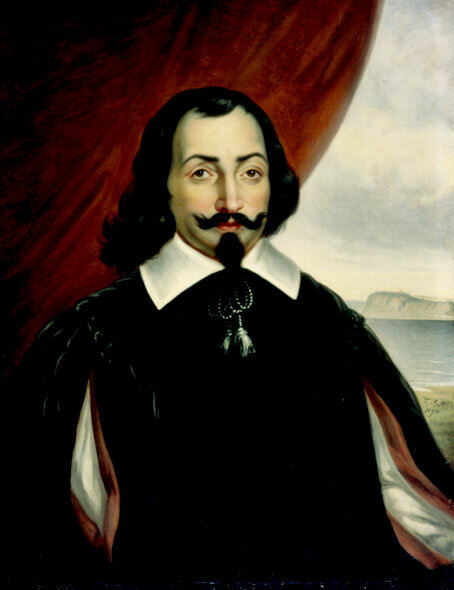
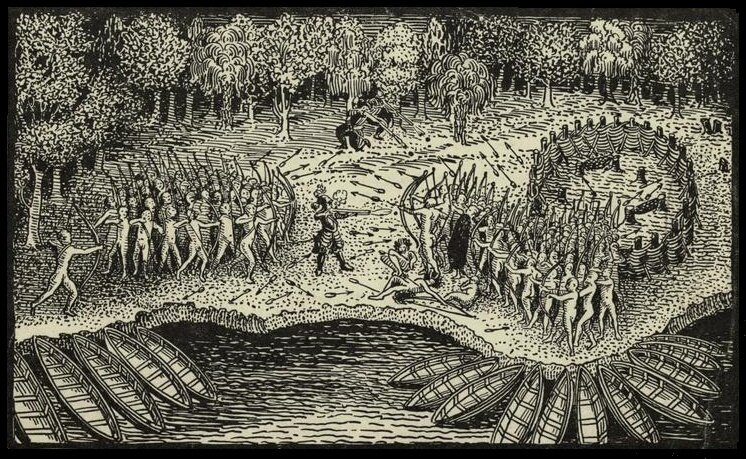

Прижизненных портретов Шамплена не сохранилось; этот портрет, как и многочисленные его скульптурные изображения — плод фантазии художников последующих поколений.
«Вечерело. Мы погрузились в каноэ, чтобы продолжить свой путь. Так как грести мы старались как можно тише и все время прижимались к берегу, нам первыми удалось заметить лодки ирокезов, находящихся на тропе войны (lesquels venoient à la guerre). Это произошло в десять часов вечера двадцать девятого числа, у оконечности мыса, который вдавался в озеро в западной его части. Воинственные крики поднялись с каждой стороны, воины взялись за оружие. Наши каноэ отошли в глубь озера. Ирокезы высадились на берег, поставив свои лодки борт к борту, соединив их между собой. Примитивными боевыми топорами, некоторые из которых были сделаны из камня, ирокезы срубили несколько деревьев и устроили надежное заграждение вокруг своих позиций. Наши люди также поставили свои челны вплотную, удерживая их в этом положении с помощью багров, чтобы ночью не потерять друг друга из вида. Все это время мы оставались на расстоянии полета стрелы от укрепления ирокезов.
Когда ирокезы закончили свои приготовления, они послали два каноэ в нашем направлении чтобы выяснить у своих противников, намерены ли они вступать в бой. Наши индейцы ответили, что у них нет иных намерений, но сейчас слишком темно и следует дождаться рассвета, чтобы можно было различать друг друга. Прибывшие сказали, что как только поднимется солнце они начнут бой. Наши индейцы согласились с этим. Всю оставшуюся ночь индейцы с той стороны пели боевые песни и танцевали, посылая бесконечные проклятия, насмешки над слабостью противника, его неспособностью проявить мужество в бою с настоящими воинами. Когда рассвело, индейцы дошли до полного измождения. Наши индейцы тоже не остались в долгу, сообщая противнику, что тот никогда еще не видел подобной силы оружия, которым они владеют, и посылая все другие проклятия и угрозы, которые посылают обычно при осаде городов. После рассвета, когда закончились песни и пляски, я со своими компаньонами все еще оставался вне поля зрения враждебных индейцев, по-одному укрывшись в каноэ индейцев-горцев с находящимся в готовности заряженным оружием. Затем мы надели легкие доспехи и, захватив аркебузы, сошли на берег. Я заметил, что индейцы, примерно 200 сильных, здоровых мужчин, вышли из-за своего укрытия. Они шли навстречу нам медленно, сохраняя уверенность и достоинство, что мне очень понравилось. Во главе шли три вождя. Наши индейцы тоже продвигались вперед, сохраняя такой же порядок. Они сказали мне, что люди, головы которых украшены большими перьями – это вожди и я должен сделать все возможное, чтобы убить их. Я пообещал им сделать все, что в моей власти, и выразил глубокое сожаление, что они не понимают моей речи, ведь я мог бы показать, как правильно напасть на врага, который должен был полностью уничтожен. Я был рад уже тому, что смогу, когда начнется бой, личным примером продемонстрировать свое желание помочь им.
Как только мы высадились, наши дикари пробежали вперед около двухсот шагов в направлении противника (enuiron deux cents pas vers leurs ennemis), который продолжал твердо стоять на своей позиции, не заметив моих компаньонов, вместе с несколькими индейцами укрывшихся в ближайшем лесу. Наши индейцы громкими криками стали побуждать меня к действию, и чтобы дать мне возможность произвести это действие – разделились на две группы, оставив меня в центре.

Я прошел вперед около двадцати шагов (marchant enuiron 20. pas deuant), так что оказался шагах в тридцати от противника. Как только дикари увидели меня, они остановились и пристально уставились на мое оружие. Заметив, что они подняли свои луки, нацелившись на нас, я приготовил свою аркебузу, прицелился (couchay mon harquebuse en jouё) в одного из трех вождей и выстрелил, убив двух вождей наповал, а третьего ранив; он умер спустя небольшое время. В свою аркебузу я зарядил четыре пули. Наши люди, увидев такой удачный выстрел, начали оглушительно кричать. Тем временем лучники выпустили из своих луков стрелы, которые дождем посыпались на головы бойцов обеих сторон. Ирокезы были очень удивлены, каким образом мне удалось убить сразу двух человек так быстро, хотя они были защищены панцирем из деревянных щитков, связанных веревками, который надежно защищал из от стрел. Пока я перезаряжал аркебузу, мои товарищи из своего укрытия произвели выстрелы, которые обескуражили противника еще больше. Они побежали с поля боя в глубину леса, покинув свое укрепление. Я преследовал их, заставив навсегда замолчать еще несколько человек.»